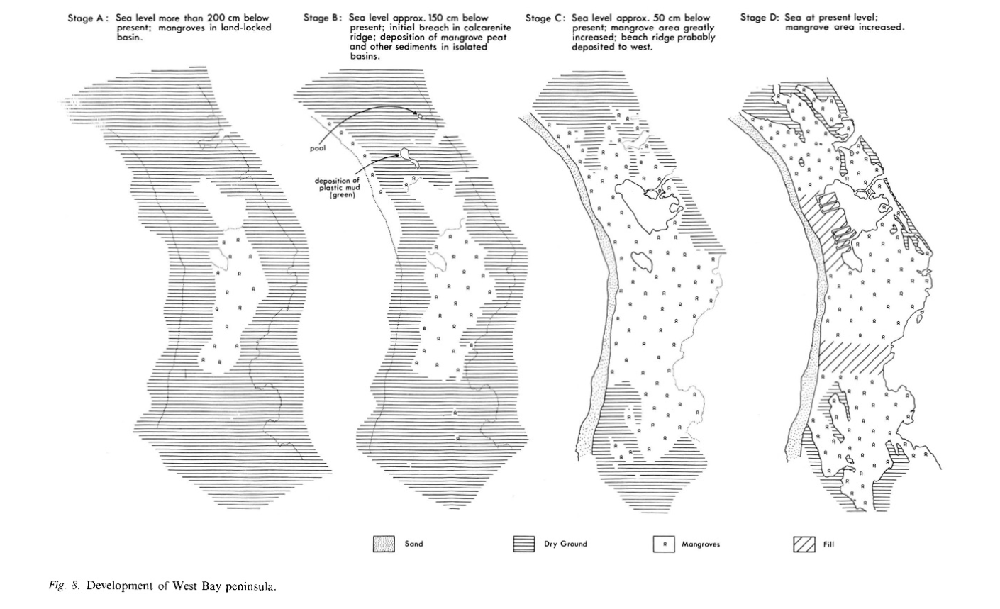
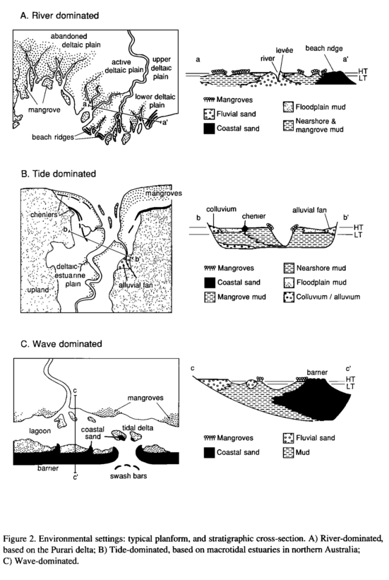
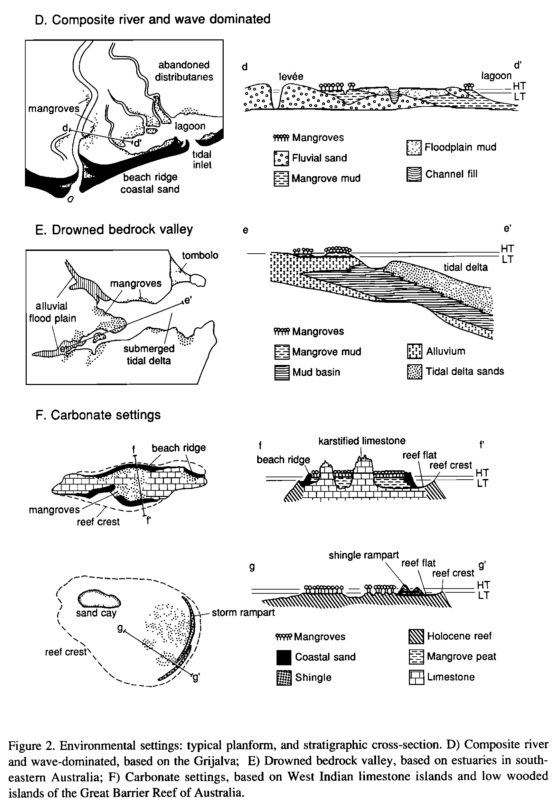
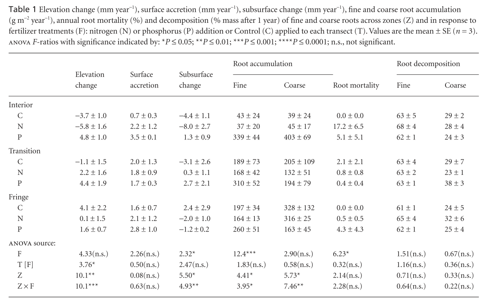
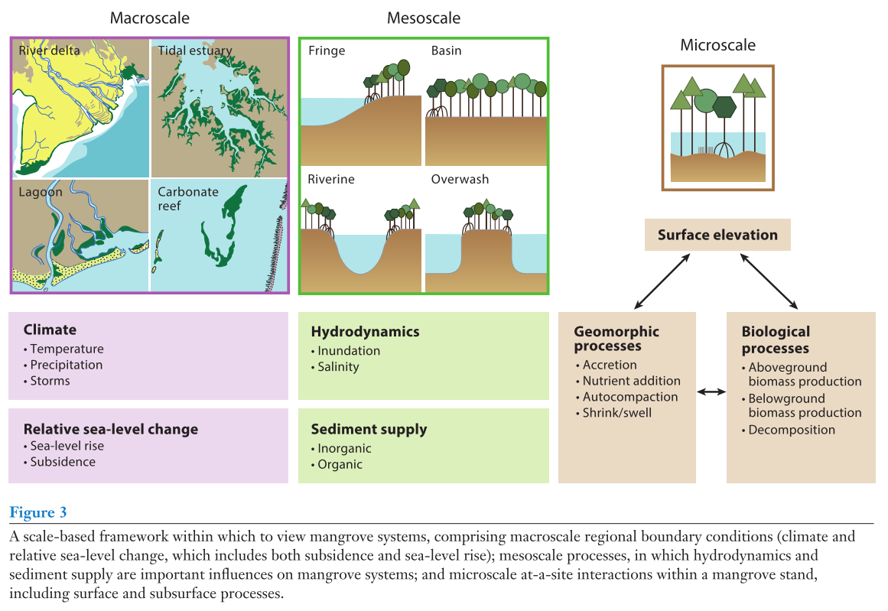

4.2 Geomorphology
4.2.1 Thom, 1967
“Mangrove ecology and deltaic geomorphology: Tabasco, Mexico” (Thom 1967)
A full summary of Thom, 1967 is provided in the “Zonation and Disturbance section.” Please refer to Section 3.1.2.
From a geomorphological standpoint, this is one of the most well-cited studies arguing that mangrove vegetation patterns respond primarily to the hydrological and sedimentary conditions that exist within a given site.
4.2.2 Carlton, 1974
“Land building and stabilization of mangroves” (Carlton 1974)
Key contribution: This is a perhaps less seminal paper but provides a brief review of the literature surrounding the ability of mangroves to “build” and “stabilize” shorelines. Much of the reviewed work is from Florida.
Key conclusions: Carlton concludes more or less that mangroves do not “build” land per se, but are influential upon the rate at which sediments accrete on shorelines. In sum, two viewpoints exist:
- mangroves “build” land by accretion of sediments (a la Davis 1940) (UNSUPPORTED)
- mangroves modify the rate at which sediments accrete, thus affecting the speed of geomorphic change rather than the direction (Egler 1952, Gill 1971) (SUPPORTED)
Further reading:
- Egler 1952
- Gill 1971
4.2.3 Thom, 1982
“Mangrove ecology: A geomorphological perspective” (Thom 1982)
Key contribution: This study is best known for the five environmental settings that Thom lays out for clastic (terrigenous) sediment deposition. The five environmental settings are detailed below:
- River dominated - Deltaic or estuarine settings in which significant sediment is transported from alluvial flows to the coastal region. The landscape is marked by numerous distributaries and interdistributary basins that vary in hydrology, particularly in regards to tidal influence.
- Tide dominated - Estuarine type settings in which the dominant hydrology is the bidirectional flow of tides. Often see sandy shoals within the estuary that are shaped parallel to the flow of tides.
- Wave dominated - Environmental settings in which flat shorelines accumulate sand barriers or cheniers that create lagoons and create regions of low-energy coastlines in which mangroves may establish. Sediment is primarily autochthonous.
- River & wave composite - Settings in which both deltaic plains with strong alluvial influence as well as strong wave influences create a complex of alluvial fans and lagoons blocked by wave-distributed sand barriers from longshore flows. E.g., Tabasco, Mexico.
- Drowned river valleys - Estuaries or embayments that are underlain by impervious rock and have been flooded during the most recent period of sea level rise.
Key knowledge: Thom describes the geomorphology of mangrove from three standpoints:
- Geophysical - The dominant physical processes that affect a landscape, such as SLR or climate
- Geomorphic - The dynamic history of the land in response to the dominant geophysical factors. Can be broken into three scales:
- macro: clastic vs. carbonate sediments
- meso: dominant physical process (tide vs. riverine vs. wave)
- micro: microtopographic features such as drainage and elevation that produce environmental gradients
- Biological - Factors such as biogeography or competition that affect the landscape
Additionally, Thom notes that his five suggested geomorphig settings are not comprehensive but are rather representative of dominant processes that may be relevant. Thom goes on to discuss variations and scale in time and space and their resultant effects on mangrove geomorphology. He concludes that zonation of mangrove species responds opportunistically to geomorphic setting, and areas with high geomorphic diversity will have high degrees of habitat variation.
Topics to think about further:
- How do geomorphic settings related to soil texture and soil carbon?
4.2.4 Woodroffe, 1983
“Development of mangrove forests from a geological perspective” (Woodroffe 1983)
Key contribution: This paper describes the development of an autochthnous, geomorphically inactive mangrove forests on Grand Cayman island. The study takes a geological perspective in that they examine soil depths and soil cores throughout the west peninsula, and reconstruct models of autochthonous development of the mangrove forest through time.
Key findings: The study concludes that there were key tidal inlets which were eventually breached my rising sea levels and allowed for expanded colonization of the calcerous bedrock by mangroves. Soil depths & cores indicate that there was a forest of landlocked mangroves at one point during low-levels (200 cm below present), but the authors are unsure of how tidal fluxes reached this area.

4.2.5 Thom, 1984
“Coastal landforms and geomorphic processes” (Thom 1984)
Key contribution: This is an extension of (Thom 1982), in which Thom describes three carbonate settings. The conclusions are largely the same as (Thom 1982), and thus refer to section 4.2.3 for them.
Key additions: The carbonate settings that Thom adds to his original five clastic settings are as follows:
- Carbonate platform - Accumulation of lime muds and peat on low-energy tropical coasts. Oftentimes the fringing mangroves are against large, open, shallow bodies of water. Coral reef or sand barriers may block wave and tidal energy to produce low-energy conditions
- Sand/shingle barrier - Mangroves may form on the cemented or non-cemented coral detritus, for example patchy mangroves colozining portions of the Great Barrier Reef. Sand mostly consists of carbonate particles and sea levels play an important part on depositional characteristics
- Carbonate embayments - Embayments in which soil “crusts” were submerged by SLR during Holocene. E.g., patchy mangroves on old reef complexes that are highly variable and reflect varability in the substrate complexity.
Key knowledge: In addition, Thom discusses some of the prior models of succession and zonation in mangroves. In particular he identifies three trends of research, including one in which he situates himself:
- “Classical succesional view of mangroves” - The “Davis 1940” view of mangroves that emphasizes the role of biota rather than geophysical or geomorphological processes
- “Environmental gradient view” - The more “ecological niche” based view of vegetation patterning that results from environmental gradients; Watson 1928 was one of first studies to argue for this effect
- “Physiographic ecology” - regards physical and botanical landscapes as mosaics of landforms that result from differential effects of physical processes on different materials, and the promotion of different biological communities in response to them
- focused at landscape scale, geomorphic variety produces variety in biological assemblages
Other reading:
- Snedaker, 1982 - Mangrove species zonation: Why?
4.2.6 Woodroffe, 1990
“The impact of sea-level rise on mangrove shorelines” (Woodroffe 1990)
Key contribution: This review by Woodroffe discusses the impacts of relative sea level rise as it was projected at the time on mangroves. There has since been 27 years worth of research in this topic, and thus it’s important to couple this study with more recent papers.
Crux of the issue - “order of rates of sea-level rise that have been predicted would in some cases lead to major disruption of mangrove forests”
Key notes:
- ability of mangrove forests to respond to different levels of sea level rise depends on coastal morphology
- steep cliffs (e.g., mid-oceanic atolls) may not be able to respond due to lack of ability to migrate along shoreline as well as distant propagule sources for recolonization
- Eustatic patterns during Holocene have varied regionally
- in Indian and Pacific Oceans, rose to approximately 1-2 m above present levels, before falling and stabilizing at current levels
- in West Indies and Southern US, increasingly risen though at decelerating rates to arrive at period of stability of today
- mangroves are effective indicators of past sea-level if species with given preference for position in intertidal zone can be identified within paleosedimenets
- however, often not clear because of compaction and contamination with younger aged organic matter
- given sea level rise, the ability of mangrove forests to persist may be largely dependent upon the catchment size of deltas (i.e., size of area from which water and sediments drain)
- carbonate settings are at higher risk of undergoing regime shifts relative to deltaic or estuarine mangroves
Woodroffe combines Thom’s environmental settings into three primary classes of geomorphological development:
- river dominated
- tide dominated
- carbonate
He expounds on them in this article, whereas he summarizes them in his review in Tropical Mangrove Ecosystems (see Section @(woodroffe1992)).
4.2.7 Woodroffe, 1992
“Mangrove sediments and geomorphology” (Woodroffe 1992)
Key contribution: This is a key synthesis of knowledge related to geomorphology and environmental settings in mangroves. Woodroffe gives an overview of sedimentation and shoreline progradation / erosion, followed by a review of Thom’s environmental settings and Lugo and Snedaker’s mangrove habitats. He concludes the article with a review of stratigraphy and paleoecology, with particular reference to mangrove responses to relative sea level rise.
Key findings:
- For Thom’s clastic environmental settings, refer to Section 4.2.3
- For Thom’s carbonate environmental settings, refer to Section 4.2.5
- For Lugo and Snedaker’s functional habitats, refer to Section 3.1.3
Diagrams of Thom’s environmental settings are provided below:

Stratigraphy and paleoecology:
- Quaternary period (~past two million years) comprised of:
- Holocene (~11,700 YBP)
- sea level has been approximately stable for 6,000 years
- sea level was rising rapidly from approximately 10,000 - 6,000 YBP
- though there is likely regional variation
- Pleistocene (~2.5 mil to 11,700 YBP)
- Sediments deposited during Holocene are well preserved and contain structures & fossils that are useful, whereas sediments deposited during Pleistocene are less well preserved
- sea level rise on more gradually sloping coasts likely resulted in significant fluctuation of mangrove forests, whereas carbonate atolls (e.g., on coral) likely disappeared during high sea levels or were restablished during low sea levels
- transgression - landward movement of shoreline during periods of sea level rise
- regression - seaward movement of shoreline during periods of sea level subsidence
- there are also iteractions with progradation and erosion that may reverse processes at specific locations
- Woodroffe examines three patterns of tropical geomorphological development:
- tropical deltas that are river dominated (poorly studied as of 1992)
- estuarine embayments that are tide-dominated
- Progradational model - estuary shoreline gradually build into estuary and is generally fringed by mangroves
- Big swamp model - rapid accumulation of sediment as sea level stabilizes followed by vertical accretion and conversion to other types; differs from progradational model in that there’s little age difference between mangrove sediments
- Barrier estuary/mud basin - sand reworked from seward shelf and forms sandy barrier or flood tidal delta; lagoon is sink for fluvial sand and mud from terrestrial sources by rivers
- carbonate banks or reefs
- predominantly characterized by in situ production of sediments
Note: This is a key study that would be good to review again later.
4.2.8 McKee, 2007
“Caribbean mangroves adjust to rising sea level through biotic controls on change in soil elevation” (McKee, Cahoon, and Feller 2007)
Key contribution: This is a very well-cited study that experimentally examples biological controls on soil elevation in mangroves of the Meso American Barrier Reef (in Belize).
Study design: The authors installed elevation rods with rod surface elevation tables (RSETs) that were able to measure changes in elevation from a baseline over the course of three years in fringe, transition and interior mangroves. They examined the effects of nutrient additions (N, P & a control) across three transects at three replicate sites. In addition, they laid a sand horizon in a plot adjacent to the RSETs and used cores to monitor subsurface accretion, allowing for differentiation between subsurface accretion and surface accretion of biomass to elevation. Finally, the authors examine several cores (up to 10m in depth) across sites throughout the Caribbean to examine relative SLR and mean soil accretion.
Key results: The authors conclude that the fringe portion of the forests are able to keep pace with sea level rise, primarily due to subsurface accumulation of biomass (significantly correlated with elevation change). The fringe zone was found to have significantly positive gain in elevation, with majority from subsurface change, whereas interior and transition zones saw subsidence. Elevation gains were seen across all sites for P addition, whereas elevation gain was variable in directino for N (negative in interior).
The authors give three key points:
- Rates of modern change in elevation may vary in both direction and magnitude within forests
- Elevation changes vary in relation to physico-chemical gradients that may control natural productivity of mangroves
- Elevation changes due to variation in nutrients are variable in both direction and magnitude
The key results in elevation change across treatments are shown below:

The results from the mangrove peat cores showed that peat accumulation corresponded with rates of SLR over the past 6,000-7,000 years. Although they are currently keeping pace with sea level rise, the cores show that at points (in which SLR exceeded 5 mm / yr), mangroves were lost from the area. Thus, the presence of mangroves at these sites depends on relative SLR rates (eustatic rise plus local subsidence). Rates of mangrove peat accretion, however, may underestimate ability to respond to SLR as these are often based on mean rates from historical records that likely fluctuate significantly in response to SLR.
4.2.9 Woodroffe, 2016
“Mangrove sedimentation and response to relative sea level rise” (Woodroffe et al. 2016)
Key contribution: This study is a review of sedimentary processes and geomorphology with a particular focus on their responses to relative sea level rise. The study introduces the concept of the accomodation space in the context of mangroves, which is the space available for potential sediment accumulation.
Notes:
Considering processes at different scales:
- Macroscale - processes at the landscape level (environmental setting a la Thom)
- Climate, eustatics
- Mesoscale - habitat level (fringe, basin, etc. a la Lugo and Snedaker)
- Hydrodynamics, sediment supply (allochthonous vs. autochthonous)
- Microscale - individual tree or plot level
- Interactions between surface elevation, geomorphic processes (accretion vs. compaction), and biological processes (BGB production)

A nice summary of interactions between sedimentology, hydrology and biology:
“The distribution of mangrove species coincides with the intertidal accomodation space, which progressively fills through sediment accumulation. Emergent properties and biocomplexity are a function of hydroperiod and are related to salinity and flooding tolerance, the latter of which is related to root morphologies, physiology, and reproductive traits such as vivipary.”
Accomodation space - the space available for potential sediment accumulation. Typically see highest accomodation space at shoreline in mangroves, though it may be highly variable (e.g., basin areas that are only flooded during highest tides).
- may distinguish between mineral vs. biological accretion, and thus may consider “ecological accomodation space”
Rates of sedimentation depend upon the accomodation space, which depends on hydrology and other factors. In the short term, the rate of sediment deposition appears independent of rate of SLR. The accomodation space is directly constrained by upper limit of tidal flooding.
Focusing on vertical adjustment within a mangrove forests risks missing broader regional picture in that mangroves have constantly shifted position throughout time, and thus there may be natural fluctuations with sea level rise that can maintain existence as well as are potentially key climate change mitigation opportunities.
Further reading:
- See the highlighted references in Mendley for additional reading – there are quite a number worth looking at further.
References
Thom, Bruce G. 1967. “Mangrove Ecology and Deltaic Geomorphology: Tabasco, Mexico.” The Journal of Ecology, 301–43. doi:10.2307/2257879.
Carlton, Jedfrey M. 1974. “Land-Building and Stabilization by Mangroves.” Environmental Conservation 1 (4): 285–94. doi:10.1017/S0376892900004926.
Thom, Bruce G. 1982. “Mangrove Ecology: A Geomorphological Perspective.” In Mangrove Ecosystem in Australia, Structure, Function and Management, edited by BF Clough, 3–17. Australian Institute of Marine Science.
Woodroffe, Colin D. 1983. “Development of Mangrove Forests from a Geological Perspective.” In Biology and Ecology of Mangroves, edited by H.J. Teas, 1–17. Springer. doi:10.1007/978-94-017-0914-9_1.
Thom, Bruce G. 1984. “Coastal Landforms and Geomorphic Processes.” In The Mangrove Ecosystem: Research Methods, edited by Sam C Snedaker and Jane G Snedaker, 3–17. United Nations Educational, Scientific, & Cultural Organization.
Woodroffe, Colin D. 1990. “The Impact of Sea-Level Rise on Mangrove Shorelines.” Progress in Physical Geography 14 (4): 483–520. doi:10.1177/030913339001400404.
Woodroffe, Colin D. 1992. “Mangrove Sediments and Geomorphology.” In Tropical Mangrove Ecosystems, edited by Alastar I Robertson and Daniel M Alongi, 7–41. doi:10.1029/CE041p0007.
McKee, Karen L, Donald R Cahoon, and Ilka C Feller. 2007. “Caribbean Mangroves Adjust to Rising Sea Level Through Biotic Controls on Change in Soil Elevation.” Global Ecology and Biogeography 16 (5): 545–56. doi:10.1111/j.1466-8238.2007.00317.x.
Woodroffe, Colin D, Kerrylee Rogers, Karen L McKee, Catherine E Lovelock, IA Mendelssohn, and Neil Saintilan. 2016. “Mangrove Sedimentation and Response to Relative Sea-Level Rise.” Annual Review of Marine Science 8: 243–66. doi:10.1146/annurev-marine-122414-034025.